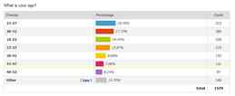
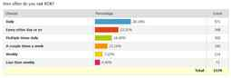
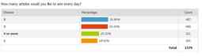

< < < Back
Results Of ROK’s First Reader Survey – Return Of Kings
Here are the results from surveying 1,580 of you recently.
1. 96% of you are male
We may have one of the staunchest male spaces on the internet.
2. 52% of you are between the ages of 18-32
Older men between 33-52 make up a sizeable 37% of readership. About 10% of you are split between being under 18 and over 52.

3. 76% of readers visit at least ever other day
If you read ROK, you are likely to come frequently.

4. Most readers prefer two or three articles a day

5. Most readers are satisfied with the length of articles
6. Biggest site usability complaint is the advertisements
Many of you hate the pop-up ads, share buttons, and email list notifications. In the past three months I removed the most aggressive pop-up ad on mobile and also cut down the frequency of desktop pop-up ads. I will reduce them further. There also seems to be font size and refresh problems on mobile and tablet.
A few complained about comments loading slow on mobile. This is a Disqus issue (on desktop the comments pre-load while on mobile it only begins loading when you scroll right to the comments).
7. Requested stories focus on game, money, neomasculinity, and cultural issues
Here are some submitted headlines that I think could definitely work on ROK:
- Seventy Years Old And Still A Player
- How to beat social anxiety completely
- How Older Men can help the younger generation
- How to use a sporting event or concert for a same day lay
- How you can legally immigrate to Eastern Europe
- Top College Majors for High-Paying Jobs
- How to wean yourself off the welfare state (and become self employed)
- How to gain weight effectively
- How to create male spaces in your city/how to find other redpillers in your surrounding
- Black Men Survival Guide to the Workforce
- Why We Need Victorian-Era British Imperialism To Save Humanity
- 5 Successful Marriages from the 1900s
- The 5 most Productive Habits of the Neomasculine Man
- How to handle a high maintenance woman
- 7 Jobs/skills neo-masculine men can develop that won’t be automated by computers. (In the near future)
- More lists of red flags in women.
- How to channel your inner Berserker
- Return of Kings Meetups will start
- Handling infidelity
- 10 Examples of Rich, Powerful Men Who Don’t Bow to Political Correctness
- 10 Neomasculine Affirmations To Say Everyday
- Why Scandinavia is not Positive Proof of Socialism
- How to deal with liberals in the workplace/the classroom
- How to minimize the taxes you pay.
- How to tell your buddy his girlfriend is bad news
- Advice for young men looking for a monogamous relationship
- Israeli Settler Movement as an example of changing the society form within starting from zero
- The rapid decline of Brazil
- How the coming automation revolution will change the relationship between the sexes.
Here are some others interesting headlines:
- MRAs, PUAs, and MGTOW Bury the Hatchet with Mutual Respect
- Managing a Household With Multiple Girlfriends Under One Roof (or I could write it since I do)
- How Israel is fighting for Western Civilization as Europe throws it away
- Hillary and Bill Clinton Killed In Auto Accident.
- “Sarkeesian, Quinn feared dead after plane carrying 127 YouTube Feminists crash into ISIS territory en route to UN conference.”
- Dumb feminist gets owned by so-and-so
- Don’t be desperate and pay for webcam models.
- Roosh Finally Cracks the Jante Code and gets Pussy in Denmark
- Roosh interview with Vladimir Putin
- We won! Women are now in the kitchen looking sexy as fuck
- Lena Dunham dies of cheeto overdose.
- Lindy West Kills Herself While Trying to Self-Perform Oral Sex
- 31 ways feminism has harmed women (#17 will really make you think)
If you think you can write one of the above articles, especially in the first group, we encourage you to submit it here.
8. Many readers don’t share articles on social networking because of leftist retribution
Some reasons given of why readers don’t share ROK articles:
- As a girl, especially an American girl with feminist friends, I’d get a lot of backlash for it. And I mean a lot.
- Unfortunately, I am a student at a liberal school and don’t want to be hounded to death or ostrcized
- I try not to share any opinions or opinionated articles with people I know via social media out of fear of losing my job/friends who disagree.
- I use facebook and twitter professionally, as a business owner, and I feel that RoK would compromise my business if I shared most of the articles on it.
- As I’m sure you’re aware, reading ROK isn’t seen as “socially acceptable” to a lot of feminists and unfortunately would lead to some “friends” labeling me a misogynist
- I have acquaintances on my feeds, who I need to maintain a relationship with, that would treat me unfavourably if I posted them. It’s best to be stealthier and not share.
The most common reason for not sharing is simply not maintaining active Facebook/Twitter accounts.
9. Common problems among readers include money, employment, sex with attractive women, relationships, and general life malaise
Money and employment were the top problems by far, mentioned in approximately half of responses. Here is a sampling:
- Figuring out how to start up a business with minimal capital. Dealing with closed-minded people without frustration. Deciding if it’s worthwhile to finish college or pursue my career goals.
- Workplace sexism. I work in healthcare and never realized how difficult it would be to even earn a living being the only male in certain work settings. Articles on safe jobs and careers for men
- I live in a town of 30,000 rednecks. There are no fuckable women anywhere.
- 1. Political correctness infecting everything from work ethics to entertainment. 2. Finding a worthy woman that isn’t corrupted by the multicultural/leftist agenda. 3. Worrying about raising children in an insane world.
- 1. Daily grind, 9-5, salary is ok but burned out. 2. Lack of life partner: I want to start a family, but there are no suitable females to wife where I live. 3. A bit of lack of direction and discipline.
- No gf, depression, no energy.
- Having motivation for job, projects, etc. Working in a boring office. Increasing my income
- 1. Rat race related stress 2. Personal/spiritual problems 3. Alienation – feeling of utter incompatibility with surrounding culture and views
- I am single, have no kids, and I am a white male in a society that demands I be a thankless work horse violently kept in line by a democratically elected government voted in by women, white-hating minorities, and self-hating white males.
- DEBT from the usurious banksters that nobody ever warned me about—I had to learn about the historical crime of usury (interest) the hard way. Loneliness from the debt which keeps me from going out and doing much. Disrespected from what the courts have done to me in my two divorces from hellish American women. And totally emasculated by having come to the realization that my children are not my children, they are the State’s children, and I only was ever a babysitter and sperm donor of them. Basically, I keep hoping the Russians will come carpetbomb this place with nukes, and then have the Chinese send in the invading hordes. It could not get any worse—at least those two nations still know the difference between a man and a woman, unlike this sh#thole of a society.
- Scaling up my own business. Wondering how I feel about traditions vs modernity, re: romantic relationships. Balance between finishing major projects and keeping small self-improvements on the go.
- I’m losing interest in women. My kids are growing up and after that’s done my life will have little purpose. I’m having a hard time finding a single trend in the world I don’t want to reverse.
- Affirmative action. Jews. Getting a real good job.
10. Most readers want to see less sponsored posts
Readers also want to see less political posts concerning the culture war or those related to white nationalism. Here are a few responses of what readers wanted to see less of:
- (1) Anti-Semitic themes or topics, and anti-Jewish conspiracy theories (2) Less Islamophobia and immigrant bashing (Muslim or Latino) (3) Less white racism or appeals to White Nationalists (e.g. “cuckservative” rhetoric)
- The genius of ROK is that there’s something for everyone. I don’t begrudge someone else their interests when it’s no trouble for me to simply skip articles that don’t interest me. Besides, we need as big a tent as possible.
- How American women are the worst, look man I’m an American and I don’t want to marry a foreign women. This whole you must abandon your county right now bullshit is getting old.
- Whiny bullshit about how women are horrible. We know. Let’s get on with it.
- Game for the sake of game. Nothing wrong with encouraging and advising men. But taking game so far just for the sake of another piece of ass is ridiculous.
- OK, I agreed with Roosh’s article concerning the work of Kevin MacDonald and Jewish power an influence. The reality is, and it’s an unfortunate one, is that Jewish elites have been in charge of many leftist destructive intellectual movements that have damaged the West. HOWEVER, since that article appeared, this site has become Stormfront! It’s now filled with commenters that blame literally EVERYTHING on the JOOOS! Don’t get me wrong. Jewish power and influence needs to be exposed. However, if I want to read commentary that blames the JOOS for everything, I’ll go to stormfront or the dailystormer
- Less of Mike Chang.
- Complaining, feminism – articles that call out liberals do nothing for me
- Fitness; honestly there is so much good information online for free by people who really are expert trainers; anything fitness related here has always stuck me as either bullshit or common knowledge if you do the minimal homework it takes to learn how to train properly;
11. Readers want to see more self-improvement and masculinity articles
Lots of men still want self-improvement advice that includes game, travel, lifestyle, health, nutrition, and fitness (when it’s not a sponsored post).
- More pro-father and pro-family articles
- Self improvement. The reason I liked this site in the first place was it helped me take a hard look at myself, to recognize my flaws (and strengths) and work on them. I feel like I don’t see this as much as when I first started reading ROK. The article in this week’s email “3 Ways To Cultivate The Discipline Of A Neomasculine Lifestyle” is exactly what I want to see more of.
- Theology, philosophy, series of articles on deep topics
- ROK has done well building a basic movement, through persuasive articles. This has to continue, both as a means of welcoming new members and continually advancing and challenging those who have ‘signed on’. That being said, it now has to move to the next stage, whereby those who embrace masculinity begin to work together for the common good.
- Aging related issues…things like settling down, changing behaviors to coincide with life stages, physical training for old geezers, and handling relationships with older women who aren’t so crazy any more. Yes, most women do get saner the older they get. Politics, history, warfare and skill at arms, making a living…all as they touch on male roles and behavior.
- Anything written by Quintus Curtius
- Neomasculine sporting pursuits, I.E. hunting, surfing, etc..
- Game for black guys, game for Indian guys, different strategies with Good girls
- Lifestyle, critism of jessica valenti
- Game Self improvement Mike Chang
- I understand ROK was born from the PUA movement but some of your audience is married men. So, a few articles geared toward the older male trying to lead the traditional good father role.
12. Readers offered their suggestions if they were made boss of the site
Comments ranged widely, but many included upgrading the professionalism and layout.
- I would focus the site on how men can make themselves better, and only that. Physically, mentally, emotionally, our relationships with women, etc.
- I’d give the site a clean, modern redesign with flat colors because it looks a little dated in my opinion
- Make it clear that this is a site for ALL men. There are too many white nationalists infecting this site and rooshv.com. They don’t seem to understand that all men have to unite to defeat our enemy. The white nationalists are dividing men.
- Cut down on the racism. Show neomasculine examples of men of different races.
- Reduce the amount of doom and gloom articles and put out more articles that focus on what ACTIONS and steps men can take to survive and thrive in the world. More articles on what men can do. Set up a sort of “masculine” ROK meet up network so that men who follow ROK, Roosh, or other manosphere sites can more easily find like-minded friends, network professionally, and just meet up and shoot the shit.
- QUALITY over quantity. Period.
- I’d relocate the company to a small island off the coast of the Philippines and have the break room staffed with 14 year old slave girls trained to literally worship the dick.
- More articles teaching men about minor hobbies or promoting masculinity positively by explaining ‘manly’ pursuits, such as the ‘three cooking tools every man should own article”, excellent writing. More quality control on articles, certain writers were pretty terrible (such as the “how to build your own pc for the first time article), it was pretty garbage. Other novel articles, such as “how to bang chicks at conventions” was hilarious, true, and insightful and niche pieces like that bring added value.
- Take this shit less seriously. RoK is a site for masculine men, and circlejerking about the end of Western civilization is hardly a masculine pasttime. Western society did this to itself – it doesn’t need saving.
- I would add more marriage building articles. It’s obvious that Western women have huge problems, but as many writers point out, that is not unique in history. These problems have existed as long as there have been different sexes. I would like to see more about how to improve a marriage and encourage your potentially brainwashed wife into a better life.
- ROK seems to be moving in the direction of an echo chamber. Most of the core audience have strong conservative values so writing for that audience does make sense, but writing exclusively what your audience wants to hear will make them grow bored over time. I am NOT saying that you should let SJWs write articles, but getting more articles from rational people who don’t fit the typical ROK reader mold will both allow you to broaden ROK’s base audience and having your core audience’s beliefs challenged once in a while will keep them from getting bored. An audience that is not challenged is an audience that will get bored and find something else.
- I would focus more on men’s self improvement. Self-improvement and progress equals happiness, and people are trying to define themselves. I believe the best path to happiness and fulfilment is self-improvement: hobbies, fitness, travels. There are great articles on the site and I think that the site should still have a masculine focus.
- Get older senior writers, like (married, with children) established (with a trade) men throwing in their hard-earned experience, wisdom and advice.
- I like the breadth of material, but I’d really like to see more field reports. The best part of game sites is where the guys are detailing what actually worked. Those stories are what opens guys eyes. More field reports detailing the exact language used. That’s what I want.
- Less feminist articles, because everyone hates them anyways, it just makes people bitter, more articles about being a better man, actions men can take to get the most out of life, and perhaps even moderating the comments a bit more. People here tend to get way to caught up in the “I’m Alpha, you’re not” debate… BTW, overall, great site guys.
- Enough with the hard right wing bullshit. This is getting to be too much like fox news and a lot of these comments in the comment section sound like whiny bitches. The site was better when it was about being a better man and improving life through bettering yourself. Now it’s too much focus on fighting feminisim. I’m sorry but feminisim barely registers in my day to day life. If I don’t succeed it isn’t because feminisim held me down. Rather than wage a culture war I would rather read how to improve my life. And no, I’m not moving to some other country cause I want traditional sex roles or some shit so stop that bullshit suggestion.
The survey was eye-opening for me. It told me that the direction I’m heading in life is not necessarily the same as most of my readers, who still have unresolved financial and sex issues. In the next three months, you’ll notice some changes that incorporates feedback from the survey.
Read Next: A Self-Improvement Challenge For ROK Readers